Ismeretlen lovag!
Látom van benned elég bátorság és eljutottál már a második oldalra is! Így tovább már nincs sok hátra a jelentkezésig.
Ezen az oldalon a jelentkezésedhez nagy segíséget nyújtunk, részletes lerírást adunk a híres várainkról és ami fontosabb a különleges ételeinkről!
Tiszaderzsi Vár
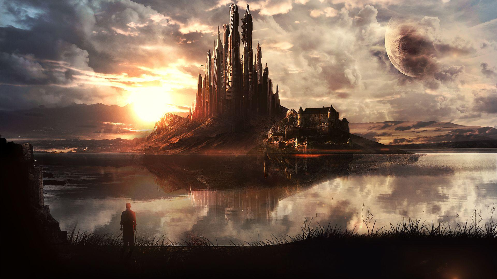
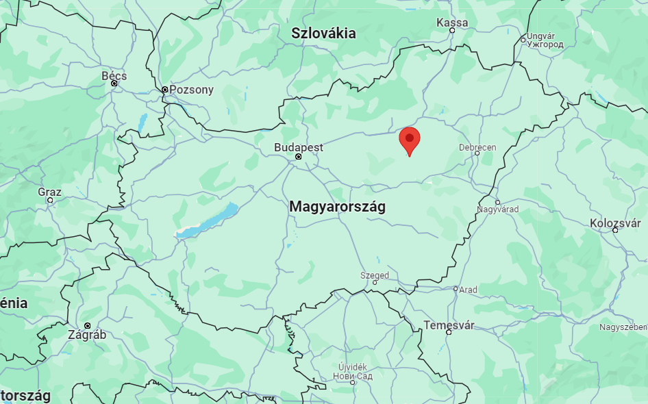
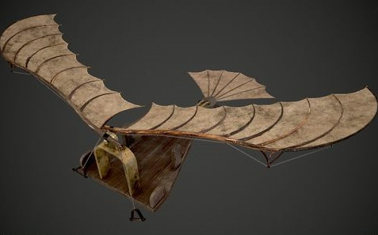
A legendás Tiszaderzsi vár, tiszaderzsen található, a pontos koordinátákat majd a jelentkezés után kapod meg emailben. A vár már 300 éves a többi várhoz képest viszonylag új. Ez a vár kifejezetten fiatalos, mindössze 300 éves, tehát gyakorlatilag még a "várkorszak" gyerekcipőiben jár. Azonban ne nézd le, mert a legmagasabb tornya hatalmas, 240 méter magas! Az a vicces, hogy ez kétszer akkora, mint a MOL székház épülete. El tudod képzelni, hogy az ablakodból kitekints, és a városban barangoló embereket két MOL épünynyire látod alattad? Na, itt megteheted! A saját szabadidős tevékenységed között nem csak a szörnyek vadászata áll rendelkezésre, hanem egy egészen különleges élmény is: a Wingsuit ugrás a vár toronyból! Néhány vakmerő lovag már innen indul el, és nem csak a szörnyeket vadássza, hanem egyben kipróbálja, milyen érzés szárnyalni a magasból.
Szóval, ha kalandra és humorra vágysz, gyere el a Tiszaderzsi Várba, ahol még a várfalak is nevetnek a vicces történelmükön!
Sitkei Vár
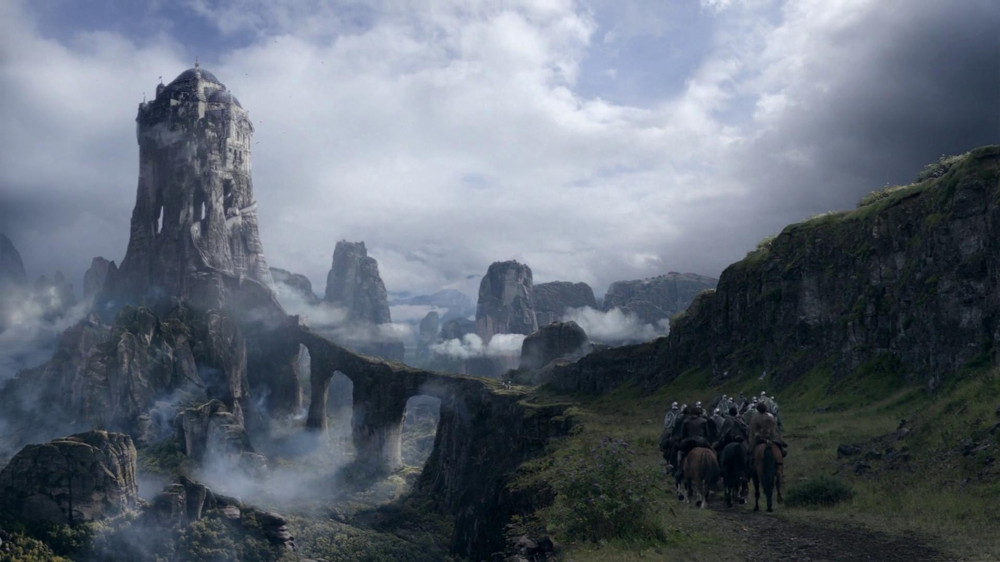
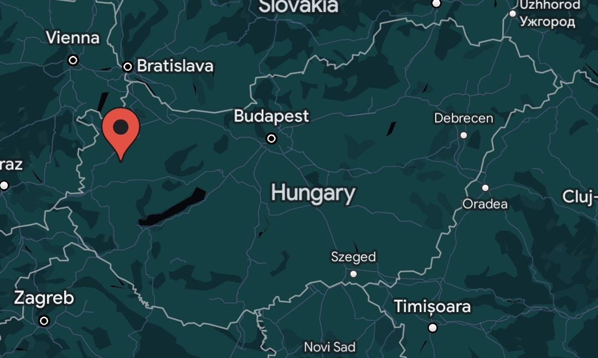
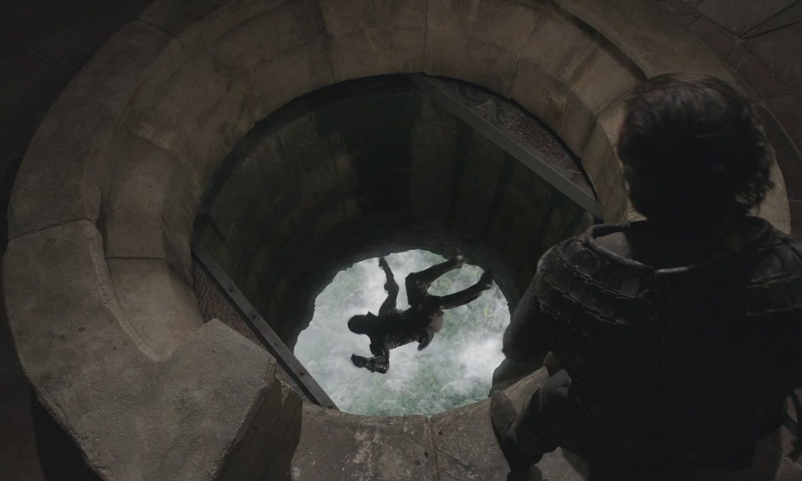
A Sitkei Várban, ahol minden a magasból származik! Ez a vár büszkén áll Magyarország észak-nyugati részén, és bátran kiemelkedik a tájék összes többi vára közül. Azonban, ne nézd le, mert ez a vár szinte "magasan" üti a többieket!
A Sitkei Vár 150 méter magas, és a legnagyobb különlegessége a trónteremben található. Mi az, ami kiemeli a legjobban? Nos, egy hatalmas, lefelé néző lyuk! Pontosan, egy ilyen szemléletes megoldást találtak a kilátásra. Amikor belenézel, láthatod a világ alattad tágulni, de vigyázz, mert ha valami kiesik, az 100 métert zuhan, mielőtt talajt érne. Ezt a lyukat ráadásul a Király is kedveli, különleges kivégzéseket hajt végre, csak egy egyszerű "rúgás" az emberi mélységbe.
De ne hidd, hogy csak tragédiák történnek itt! A Sitkei Várban a Bungee-Jumping is rendkívül népszerű sportág. Lefejték, kilövik, vagy éppen ledobzódnak a turisták a lyukon keresztül, és élvezik a lebegést, mielőtt az utolsó pillanatban a rugó visszarántaná őket. Ez a várat tulajdonképpen extrém sportok kedvelői örömmel vették birtokba, úgy tűnik, még a király is szívesen szárnyalna a magasból!
Szóval, ha egy kis magaslati mókára és téliszonyra vágysz, töltsd a táborodat a Sitkei Várban, ahol mindenki a végletekig megy - akár lefelé is!
Noszvaji Vár
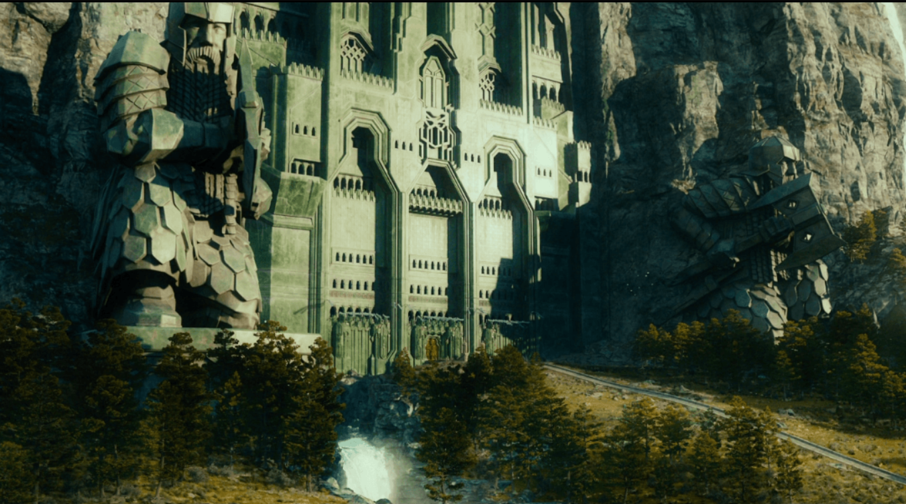
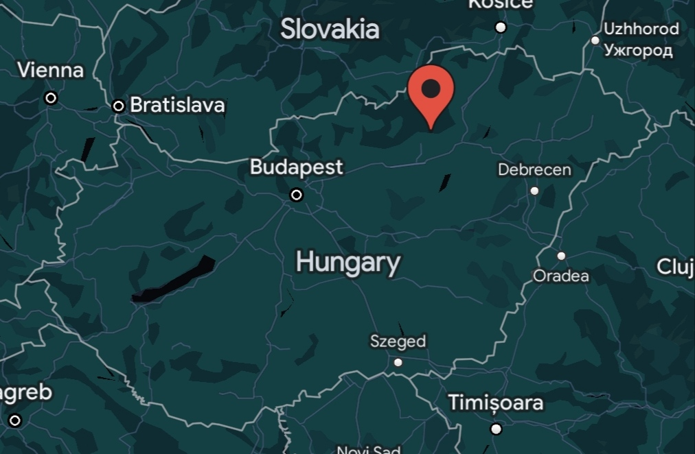
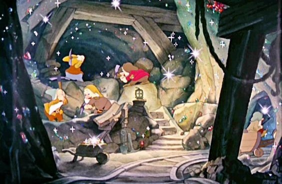
A Noszvaja Vár, ahol minden a mélységből fakad - még a gazdagság is! Ez a vár büszkén áll Magyarország észak-keleti részén, és kiemelkedik stratégiai elhelyezkedésével, mintha maga a hegy ölelné körül. Noszvaja várja olyan védelmi rendszerrel rendelkezik, hogy még a mókusok is irigykedve néznek fel rá!
A várban található hatalmas bányákban valóban a mélységig hatolnak. A bátrak, akik lemerészkednek egészen 170 méter mélyre a talajszint alá, egyfajta arany- és ezüstbányász kalandba csöppennek. Nem csak a vár, hanem maga a hegy is arannyal és ezüsttel öleli körbe magát, így azok, akik a szabadidejükben bányásznak, nem csak élménnyel, de akár gazdagsággal is gazdagodhatnak.
De ne feledjük, hogy a Noszvaja Várban nem csak az arany és az ezüst húzza a talajszint alá a látogatókat, hanem a humor is! Itt a várőrség nemcsak a falakon belül, hanem a mélységekben is tréfásan ügyel a jó hangulatra. Ha leereszkedsz a bányákba, az elbűvölő "Gazdagító Gúnyolódó" várja, aki tréfásan kiszúrja azokat, akik a humoron kívül még valami mást is keresnek.
Szóval, ha a mélységbe és a gazdagság egyedi keverékére vágysz, védelmezd a tábor alatt Noszvaja Várat, ahol a nevetés mélyreható élmény, és az arany csak a jéghegy csúcsa!
Notalabi Vár
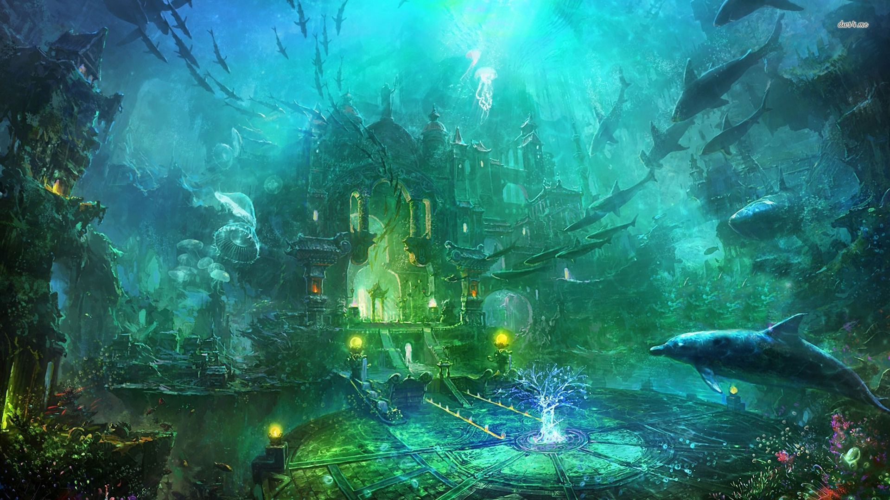
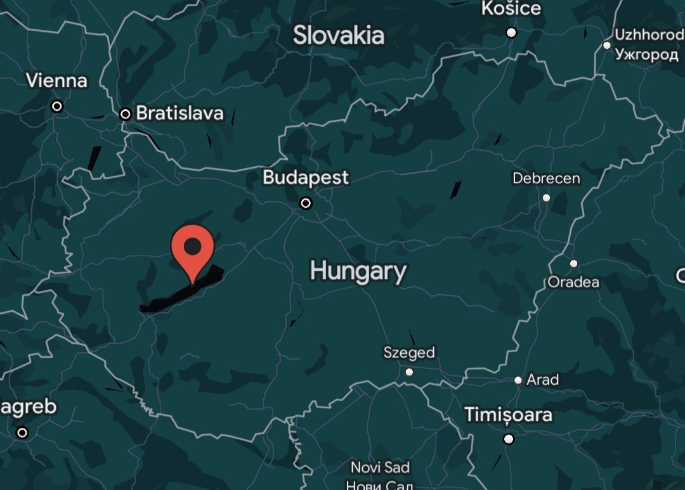
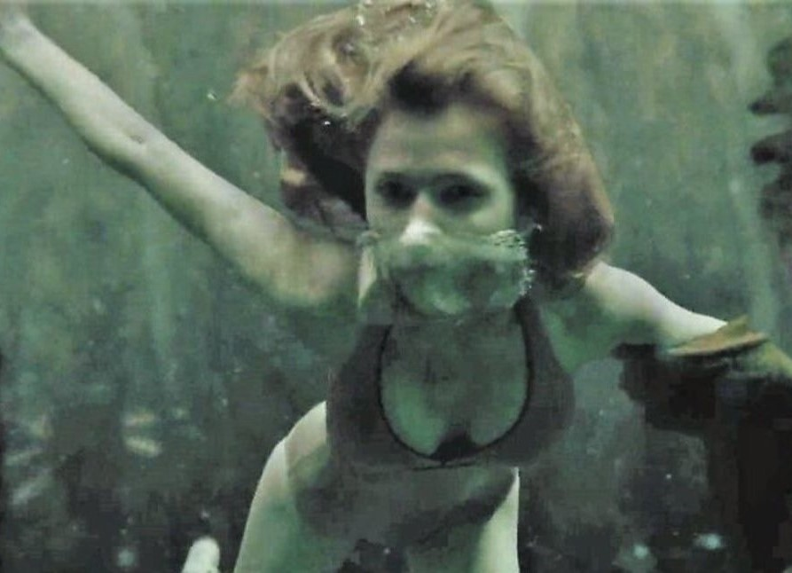
Üdvözöllek a Notalabi Várban, ahol minden a mélységben bukkan fel - még a kihívások is! Ez a vár mélyen, 187 méterrel a víz alatt található, és hozzáféréséhez egy kis extra főzettel kell légzést biztosítani. De ki mondta, hogy a nevetséges kalandoknak nem lehet mélysége?
A Notalabi Vár megközelítése valóban egy kicsit különc, de higgy nekem, a főzettel való légzés csak a kezdet! Itt a költségek kicsit másképp alakulnak, és az árban már benne van egy adag víz alatti varázslat és egy kis "mélytengeri adrenalin". Aki itt kiképzésen vesz részt, az nem csak a körülmények miatt lesz izmosabb, hanem a pénztárcája is könnyebb lesz, miután kifizeti a mélytengeri kihívásokat.
A vízalatti várhoz mélytengeri teremtmények és rettenetek is járnak. A vízalatti szörnyekkel sokkal nehezebb harcolni, mivel te magad lassabban tudsz mozogni, így ez a kiképzési program a legszívósabb.
De ne hagyjuk figyelmen kívül a szórakozást sem! A Notalabi Várban a kiképzés után mindenki átadhatja magát a delfin lovaglás különleges művészetének. Ezek a vízalatti delfinek kifejezetten a vár lakóinak szórakoztatására vannak kiképezve, és aki egyszer kipróbálja, az a mélyvízi szórakozás igazi lovagja lesz!
Szóval, ha a nedvesség, a kihívások és a víz alatti delfin lovaglás hármas kombinációja érdekel, a Notalabi Vár a te helyed! Ezt biztos nem úszod meg szárazon!
Ételek
PáncélPuding:
Ez a desszert igazi kihívás minden édesszájúnak. A PáncélPuding acélosan sűrű szerkezete olyan, mint egy védőpáncél a finom ízeknek. Csak a legerősebb evőeszközökkel lehet felszolgálni, és azoknak ajánlott, akik szeretnék kipróbálni, milyen érzés egy valódi páncélba harapni.
A Páncél Puding az egyik legolcsóbb ételeink közé tartozik 1500ft-ba kerül egy adag, nem hagynám ki!
Táltos Torta:
Ez a sütemény különleges mágikus hozzávalókból készül, és csak azoknak ajánlott, akik bátrak és kalandvágyóak. A Táltos Torta lágy és lágyan olvadó, miközben a mágikus ízek varázslatos élményt kínálnak mindazoknak, akik hajlandóak belevágni a mágia ízvilágába.
A Táltos torta a legdrágább édességünk, de nem hiába 3700ft az ára..
Lándzsasaláta:
Ez a frissítő étel igazi lovagi kihívás. Friss zöldségek és lándzsa darabok keveréke, amelyet csak az igazi hősök és lovagok mernek elfogyasztani. A Lándzsasaláta tökéletes választás azoknak, akik szeretnének erőt meríteni a természet erejéből.
A Lándzsa saláta az elvetemült egészségeséletmódra törekedő lovagoknak van, ára 1800ft.
Buravirág Bifsztek:
Ez a különleges bifsztek a mezők közepén sétálgatva szerezhető be. Az egyedi virágokkal fűszerezett húsételek a természet ihlette ízekkel varázsolják el azokat, akik mernek különleges gasztronómiai élményekre vállalkozni.
A Bifsztekünk a legprémiumabb minőségű ételünk és egybne a legdrágább is, ára 4000ft.
Sákrkány Sültkrumpli:
Egy valódi fantasy finomság, ahol fűszeres krumpliszeletek kerülnek közvetlenül a sárkány tűzhelyéről sütésre. A ropogós krumpli és a sárkányi fűszerezés garantáltan felejthetetlen ízorgiát kínál minden krumpli szerelmese számára.
A Sárkány Sültkrumplink egy hatalmas tál krumpli igazából, ára csupán 1200ft.
Griffmadár Gulyás:
Ez a fenséges marhapörkölt különlegessége abban rejlik, hogy egy kis griffmadár pótolja a hagyományos húsokat. A griffmadár gulyás ízletes és tápláló, egy valódi kulináris kaland minden ételkedvelő számára.
A leginkább őshonos eledelünk A Griffmadár Guylásnak optimális árat szabtunk meg, 2500ft
Speciális opció:
Mint ahogy minden férfi életében, a lovagok életében is a legfontosabb nő az Anyukájuk. Természetesen ha a legolcsóbban akarjátok megűszni a táborainkban töltött időt, akkor jó hír, van arra opció hogy táborainkba ételt lehessen küldeni.
Italok
Bátor Bor:
Egy bor, amelyet csak a bátrak mernek megkóstolni. A BátorBor a bátorság és merészség itala, amely garantáltan felpezsdíti az érzékeidet.
Italaink közül, a borunk a legdrágább, ára 2000ft.
Szomjoltó Sör:
Ez a különleges sör kifejezetten szomjúságoltó céllal készült. A SzomjoltóSör tökéletes választás a szomjas kalandorok számára, akik egy hosszú nap után szeretnének felfrissülni.
A Szomjoltó Sör, minden táborunkban a ház ajándéka, úgyveéljük a legjobb kísérője a lakomáknak.
Csapvíz az Örökkévalóságnak:
Ez a tréfásan nevezett ital a legendás csapvíz, amely örök életet ígér mindazoknak, akik megkóstolják. Természetesen csak egy humoros fantázia, de garantáltan mosolyt csal az arcodra.
Ohh a csapvíz, más éttermekkel egyetemben, mi nem ostagatjuk a csapvizet mint valami sört.. ára 1000ft
Kacagó Kóla:
Ez a különleges kólaital kacagást garantál minden korty után. A Kacagó Kóla a jókedv itala, amelyet a nevetés és vidámság kedvelőinek ajánlunk.
Végül a szponzorunk a Coca-cola Magyarország, hagyományos kólával is tudot frissíteni magad asztalunknál, ára 1500ft.